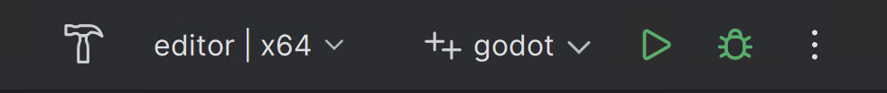
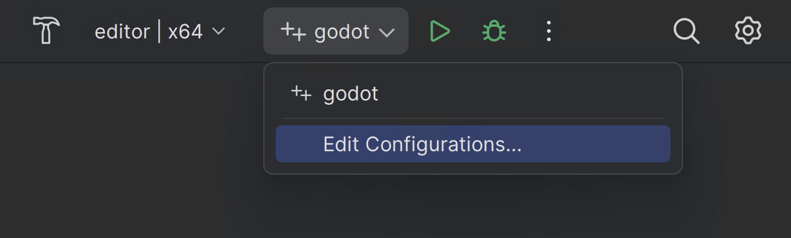
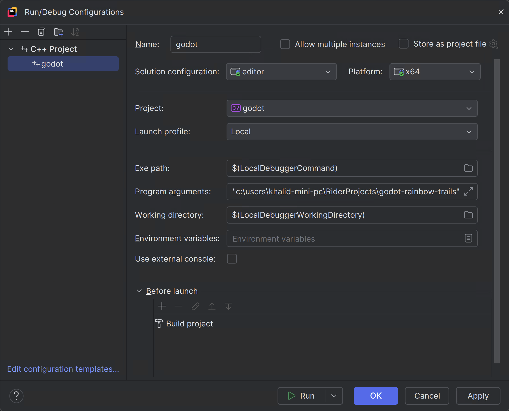
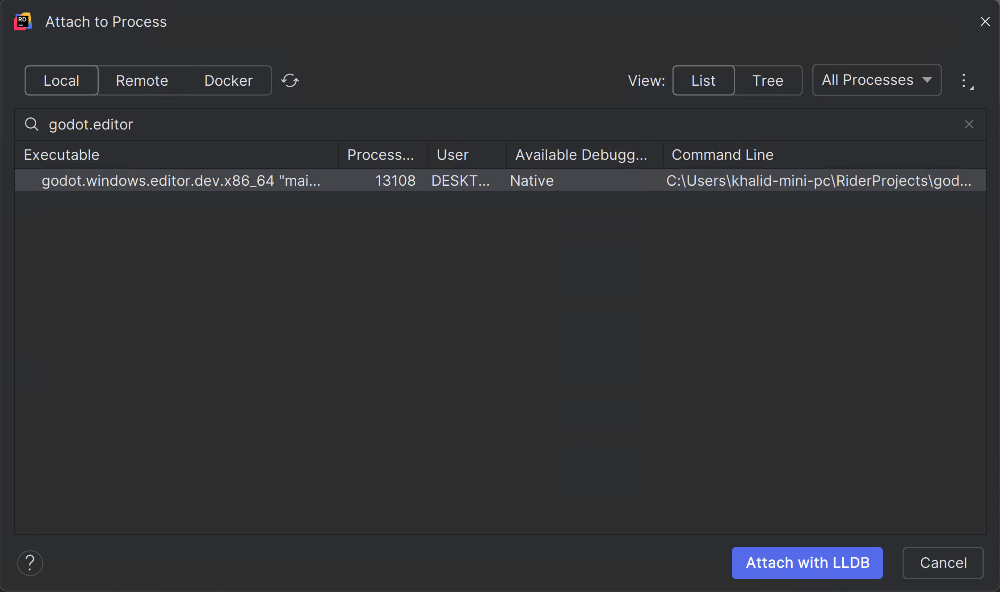

JetBrains Rider
JetBrains Rider is a commercial JetBrains IDE for C++, C# and GDScript that uses the same solution system as Visual Studio.
Note
This documentation is for contributing to the game engine, not for using JetBrains Rider as a C# or GDScript editor. To code C# or GDScript in an external editor, see the C# guide to configure an external editor.
Importing the project
Tip
If you already use Visual Studio as your main IDE, you can use the same solution file in Rider. Rider and Visual Studio use the same solution format, so you can switch between the two IDEs without rebuilding the solution file. Debug configurations need to be changed when going from one IDE to another.
If you are starting from the scratch, please follow instructions, specifically:
Install all the dependencies.
Figure out the scons command for compiling to target a specific platform.
Provide scons with additional arguments to request a solution file generation:
Add vsproj=yes dev_build=yes to the scons command
The vsproj parameter signals that you want Visual Studio solution generated.
The dev_build parameter ensures the debug symbols are included, allowing to e.g. step through code using breakpoints.
Note
Each SCons run only generates the .generated.props file for a single
Solution Configuration. Please run SCons once per target you plan to use:
scons vsproj=yes dev_build=yes target=editor
scons vsproj=yes dev_build=yes target=template_debug
scons vsproj=yes dev_build=yes target=template_release
Open the generated
godot.slnin Rider.
Note
Ensure that the appropriate Solution configuration is selected on the Rider toolbar. It affects resolve of the SDKs, code analysis, build, run, etc.
Compiling and debugging the project
Rider comes with a built-in debugger that can be used to debug the Godot project. You can launch the debugger by pressing the Debug icon at the top of the screen, this only works for the Project Manager, if you want to debug the editor, you need to configure the debugger first.

Click on the Godot > Edit Configurations option at the top of the screen.

Ensure the following values for the C++ Project Run Configuration:
Exe Path :
$(LocalDebuggerCommand)Program Arguments:
-e --path <path to the Godot project>Working Directory:
$(LocalDebuggerWorkingDirectory)Before Launch has a value of "Build Project"
This will tell the executable to debug the specified project without opening the Project Manager.
Use the root path to the project folder, not project.godot file path.

Finally click on "Apply" and "OK" to save the changes.
When you press the Debug icon at the top of the screen, JetBrains Rider will launch the Godot editor with the debugger attached.
Alternatively you can use Run > Attach to Process to attach the debugger to a running Godot instance.

You can find the Godot instance by searching for
godot.editorand then clickingAttach with LLDB

Debug visualizers
Debug visualizers customize how complex data structures are displayed during debugging. The "natvis" (short for "Native Visualization") files built-in with Godot are automatically used.
Note
On macOS and Linux, natvis support requires Rider 2026.2 or later.
Unit testing
Leverage Rider doctest support. Please refer to the instructions.
Profiling
Please refer to the profiling instructions.
Please consult the JetBrains Rider documentation for any specific information about the JetBrains IDE.
Known issues
Debugging Windows MinGV build - symbols are not loaded. Reported RIDER-106816.